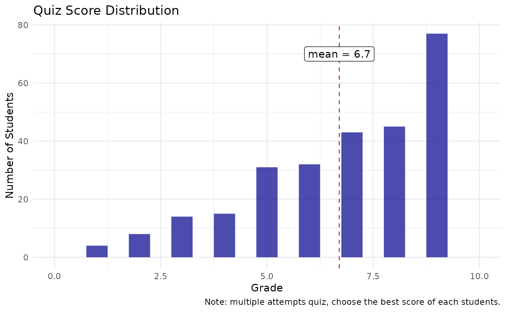
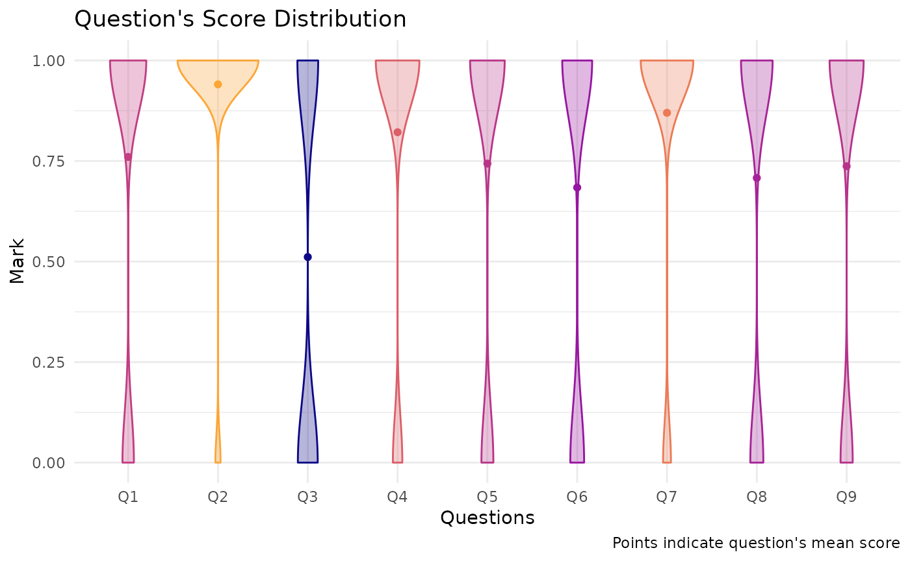

Read Data
moodleStats comes with a raw example data for Moodle Grades Report in a CSV file. Here is the steps to read that data into R.
Get path to the example data by
moodleStats_example().Read
grades_report.csvinto a data frame. I will usereadr::read_csv().
# Get path to `grades_report.csv`
path <- moodleStats_example("grades_report.csv")
# Read to a Data Frame
grades_df <- readr::read_csv(path)Things to consider
grades_df is a Moodle Grades Report that has 461 rows and 19 columns. Let’s see an overview of this data frame.
head(grades_df)
#> # A tibble: 6 × 19
#> Surname `First name` Institution Department `Email address` State `Started on`
#> <chr> <chr> <lgl> <lgl> <chr> <chr> <chr>
#> 1 el-Taha Joshua NA NA joshua.el_025@… Fini… 12 February…
#> 2 al-Ayd… Tyler NA NA tyler.al_192@e… Fini… 12 February…
#> 3 Sawyer Michael NA NA michael.saw_24… In p… 16 February…
#> 4 Snow Leeah NA NA leeah.sno_016@… Fini… 21 February…
#> 5 al-Hab… Lawrence NA NA lawrence.al_20… Fini… 22 February…
#> 6 el-Sal… Isaiah NA NA isaiah.el_140@… Fini… 23 February…
#> # … with 12 more variables: Completed <chr>, `Time taken` <chr>,
#> # `Grade/9.00` <chr>, `Q. 1 /1.00` <chr>, `Q. 2 /1.00` <chr>,
#> # `Q. 3 /1.00` <chr>, `Q. 4 /1.00` <chr>, `Q. 5 /1.00` <chr>,
#> # `Q. 6 /1.00` <chr>, `Q. 7 /1.00` <chr>, `Q. 8 /1.00` <chr>,
#> # `Q. 9 /1.00` <chr>There are couple of things that need cleaning before working with this data in R.
Need to clean
Column Names
names(grades_df)
#> [1] "Surname" "First name" "Institution" "Department"
#> [5] "Email address" "State" "Started on" "Completed"
#> [9] "Time taken" "Grade/9.00" "Q. 1 /1.00" "Q. 2 /1.00"
#> [13] "Q. 3 /1.00" "Q. 4 /1.00" "Q. 5 /1.00" "Q. 6 /1.00"
#> [17] "Q. 7 /1.00" "Q. 8 /1.00" "Q. 9 /1.00"Spaces in column names, we will have to remove them.
Too many metadata in the column names, for example:
In
Grade/9.00column, the setting of quiz maximum grades (9.00).In
Q. 1 /1.00toQ. 9 /1.00, the setting of question’s maximum score (1.00).
These metadata (quiz maximum grades and question’s maximum score) should be removed from the column names, and store it in another data structure that I will present to you later.
Column Formatting
grades_df$`Started on`[1]
#> [1] "12 February 2021 1:03 PM"
grades_df$Completed[1]
#> [1] "1 March 2021 3:35 AM"Date-Time formatting in Started on and Completed column; however, this package only use Started on column.
unique(grades_df$`Grade/9.00`)
#> [1] "5.00" "8.00" "-" "9.00" "6.00" "0.00" "7.00" "4.00" "2.00" "3.00"
#> [11] "1.00" "5.90"
unique(grades_df$`Q. 1 /1.00`)
#> [1] "1.00" "-" "0.00" "0.68"Numeric value formatting in Grade/9.00 and Q.* columns. Some characters need to be converted to NA such as “-” in this example.
Last Row
Last row of grades_df contains an “Overall average”.
grades_df[nrow(grades_df), ]
#> # A tibble: 1 × 19
#> Surname `First name` Institution Department `Email address` State `Started on`
#> <chr> <chr> <lgl> <lgl> <chr> <chr> <chr>
#> 1 Overal… NA NA NA NA NA NA
#> # … with 12 more variables: Completed <chr>, `Time taken` <chr>,
#> # `Grade/9.00` <chr>, `Q. 1 /1.00` <chr>, `Q. 2 /1.00` <chr>,
#> # `Q. 3 /1.00` <chr>, `Q. 4 /1.00` <chr>, `Q. 5 /1.00` <chr>,
#> # `Q. 6 /1.00` <chr>, `Q. 7 /1.00` <chr>, `Q. 8 /1.00` <chr>,
#> # `Q. 9 /1.00` <chr>It’s convenient that Moodle provide brief summary of average quiz grades and question’s scores for teachers, but we don’t need that because moodleStats already provides a function to calculate quiz and question statistics which I’ll show you later.
Therefore, the last row will be removed.
Lastly, the first name and last name of students are in First name and Surname column, which is OK. However, If we were to perform a data transformation grouping by each student, we would have to write code to group by 2 variables.
For convenience sake, joining First name and Surname into a single column (i.e., Name) can be more easier to work with, as I’ll show you later.
Filtering attempts
Quiz setting in the Moodle of grades_df allows student to submit answers multiple times (i.e., unlimited attempts).
If we count student attempts we can see that many students do quiz multiple times.
grades_df %>%
count(`First name`, Surname, State, sort = TRUE) %>%
head()
#> # A tibble: 6 × 4
#> `First name` Surname State n
#> <chr> <chr> <chr> <int>
#> 1 Anthony Calhoun Finished 8
#> 2 Gilbert Nez Finished 8
#> 3 Faatih Martin Finished 6
#> 4 Brianna al-Kaiser Finished 4
#> 5 Calley al-Amini Finished 4
#> 6 Jocelyn Washington Finished 4If some observation (row) is duplicated, and we calculate statistics based these, we would get somewhat bias result.
Therefore, moodleStats will provide a method to filter rows by quiz status, grades, and started time of each student in order to obtain a unique observation for every rows.
Prepare Data
Previously, I’ve listed the things that needs to be done, moodleStats provides a function to do all that.
grades_df_preped() will do the followings:
Cleaning
Clean some column names.
Remove the last row which contains “Overall average”
Join
First nameandSurnameintoNamecolumn by a separator (sep_name)Format
Grade/9.00andQ.*columns to numeric, and any “-”, “Requires grading”, and “Not yet graded” will converted toNA.Rename and format
Started ontoStartedcolumn with “POSIXct” class
Filtering
Filters will be applied in this order.
-
Filter quiz status (
State) bychoose_stateargument.“Finished”: (default) choose only submitted attempts
“In progress”: choose only non-submitted attempts
“all”: choose all attempts (no filter)
-
Filter student grades (
Grade) bychoose_gradeargument.“max”: (default) choose attempts that has maximum score of each students
“min”: choose attempts that has minimum score of each students
“all”: choose all attempts (no filter)
-
Filter started time (
Started) bychoose_timeargument.“first”: (default) choose the first attempt of each students
“last”: choose the last attempt of each students
“all”: choose all attempts (no filter)
In the example below, I call prep_grades_report() with arguments to filter the first submitted attempt that has a maximum score of each student.
grades_df_preped <- prep_grades_report(grades_df,
sep_name = " ",
choose_state = "Finished",
choose_grade = "max",
choose_time = "first")
names(grades_df_preped)
#> [1] "Name" "Institution" "Department" "Email" "State"
#> [6] "Started" "Grade" "Q1" "Q2" "Q3"
#> [11] "Q4" "Q5" "Q6" "Q7" "Q8"
#> [16] "Q9"
head(grades_df_preped)
#> # A tibble: 6 × 16
#> Name Institution Department Email State Started Grade Q1 Q2
#> <chr> <lgl> <lgl> <chr> <chr> <dttm> <dbl> <dbl> <dbl>
#> 1 Josh… NA NA josh… Fini… 2021-02-12 13:03:00 5 1 1
#> 2 Leea… NA NA leea… Fini… 2021-02-21 20:09:00 9 1 1
#> 3 Isai… NA NA isai… Fini… 2021-02-23 19:51:00 6 0 1
#> 4 Eric… NA NA eric… Fini… 2021-02-23 21:57:00 0 0 0
#> 5 Euge… NA NA euge… Fini… 2021-02-24 12:25:00 7 1 1
#> 6 Anni… NA NA anni… Fini… 2021-02-25 01:39:00 4 0 1
#> # … with 7 more variables: Q3 <dbl>, Q4 <dbl>, Q5 <dbl>, Q6 <dbl>, Q7 <dbl>,
#> # Q8 <dbl>, Q9 <dbl>In grades_df_preped, the column names are cleaned, columns types are formatted properly, and missing values NA are assigned as previously described.
Also, student names are unique in every rows, no duplication.
any(duplicated(grades_df_preped$Name))
#> [1] FALSEQuiz Metadata
Now that column names has been cleaned, How can we get maximum settings of quiz and questions?
quiz_meta() can obtain that quiz settings and filtering record that performed previously. The result will nicely printed to R console.
grades_df_meta <- quiz_meta(grades_df_preped)
grades_df_meta
#>
#> ── Moodle Quiz Setting ──
#>
#> • Maximum grades of quiz: 9
#> • Maximum score of questions:
#>
#> Q1 Q2 Q3 Q4 Q5 Q6 Q7 Q8 Q9
#> 1 1 1 1 1 1 1 1 1
#>
#> ── Data Frame Filtering ──
#>
#> Data frame was filtered by the following orders:
#> 1. Choose "Finished" responses by 'State' column.
#> 2. Choose max grades of each students.
#> 3. Choose first attempt(s) of each student by 'Started on' column.Underneath, It is just a list so you can subset them later as desired.
# Maximum score of each questions
grades_df_meta$quiz_setting$questions_max
#> Q1 Q2 Q3 Q4 Q5 Q6 Q7 Q8 Q9
#> 1 1 1 1 1 1 1 1 1Quiz Summary
Now that we have prepared our data, It’s time to calculate quiz summary statistics.
summary_quiz() calculates various quiz summary statistics, and combine it into 1 row data frame.
quiz_report_df <- summary_quiz(grades_df_preped)
head(quiz_report_df)
#> # A tibble: 1 × 14
#> n min max max_quiz Q1 median Q3 IQR MAD mean SD skewness
#> <int> <dbl> <dbl> <dbl> <dbl> <dbl> <dbl> <dbl> <dbl> <dbl> <dbl> <dbl>
#> 1 272 0 9 9 5 7 9 4 2.97 6.70 2.22 -0.884
#> # … with 2 more variables: kurtosis <dbl>, Cronbach_Alpha <dbl>All of these parameters were calculated from total quiz scores (Grade column) of each students except for Cronbach_Alpha which use all questions scores (Q columns), and max_quiz is a maximum score possible of this quiz.
For interpretation of these parameters, please visit summary_quiz() documentation.
Plot Quiz Score
Let’s plot a histogram of quiz score using ggplot2
grades_df_preped %>%
ggplot(aes(Grade)) +
geom_histogram(binwidth = 0.5, fill = "darkblue", alpha = 0.7) +
geom_vline(xintercept = quiz_report_df$mean, color = "maroon", lty = "dashed") +
annotate("label",
x = quiz_report_df$mean, y = 70,
label = paste0("mean = ", round(quiz_report_df$mean, 2))) +
scale_x_continuous(breaks = 0:10) +
xlim(0, 10) +
labs(title = "Quiz Score Distribution",
caption = "Note: multiple attempts quiz, choose the best score of each students.",
y = "Number of Students")
The plot shows that the distribution is non-Gaussian which has its tails on the left side, corresponding to the negative skew that we’ve calculated (skewness = -0.88), also this distribution has quite a bit of outliers with the kurtosis of 0.08
Question Summary & Item Analysis
summary_questions() calculates various question summary statistics and item analysis into a data frame.
Let’s see what parameters we can get.
question_report_df <- summary_questions(grades_df_preped)
names(question_report_df)
#> [1] "Questions" "n" "min"
#> [4] "max" "max_setting" "mean"
#> [7] "SD" "Difficulty_Index" "Discrimination_Index"
#> [10] "p.value" "p.signif"Summary Stats of Questions
Descriptive statistics of each questions are in the data frame from column n to SD
question_report_df %>%
select(Questions:SD)
#> # A tibble: 9 × 7
#> Questions n min max max_setting mean SD
#> <chr> <int> <dbl> <dbl> <dbl> <dbl> <dbl>
#> 1 Q1 271 0 1 1 0.760 0.428
#> 2 Q2 269 0 1 1 0.941 0.237
#> 3 Q3 268 0 1 1 0.511 0.501
#> 4 Q4 269 0 1 1 0.822 0.384
#> 5 Q5 269 0 1 1 0.743 0.438
#> 6 Q6 269 0 1 1 0.684 0.466
#> 7 Q7 269 0 1 1 0.870 0.337
#> 8 Q8 267 0 1 1 0.708 0.456
#> 9 Q9 270 0 1 1 0.737 0.441Item Analysis
Parameters of item analysis are Difficulty_Index and Discrimination_Index.
question_report_df %>%
select(Questions, Difficulty_Index:p.value)
#> # A tibble: 9 × 4
#> Questions Difficulty_Index Discrimination_Index p.value
#> <chr> <dbl> <dbl> <dbl>
#> 1 Q1 0.760 0.434 7.44e-14
#> 2 Q2 0.941 0.452 6.15e-15
#> 3 Q3 0.511 0.600 1.48e-27
#> 4 Q4 0.822 0.510 3.52e-19
#> 5 Q5 0.743 0.675 4.13e-37
#> 6 Q6 0.684 0.646 3.26e-33
#> 7 Q7 0.870 0.554 4.86e-23
#> 8 Q8 0.708 0.640 3.59e-32
#> 9 Q9 0.737 0.597 1.81e-27Item Difficulty Index (p) (
Difficulty_Index) is a measure of the proportion of examinees who answered the item correctly. It ranges between 0.0 and 1.0, higher value indicate lower question difficulty, and vice versa.Item Discrimination Index (r) (
Discrimination_Index) is a measure of how well an item is able to distinguish between examinees who are knowledgeable and those who are not. It is a pairwise point-biserial correlation between the score of each questions and total score of the quiz. It range between -1.0 to 1.0. Negative values suggest a problem, indicating that sco e of the particular question is negatively correlated with total quiz score; therefore, revision of the question is suggested.
Note:
p.valueis a level of significant ofDiscrimination_IndexHow to interpret item analysis see this.
Data visualization often delivers insight more naturally. Let’s make some plots for item analysis!
Plot Question’s Score
Let’s plot a distribution of each question’s score. I think that violin plot will be a good one in this case.
But first, we need to transform grades_df_preped to a long format.
grades_df_long <- grades_df_preped %>%
# Select Q1 to Q9 columns
select(starts_with("Q")) %>%
# Pivot to long
tidyr::pivot_longer(cols = starts_with("Q"), names_to = "Questions", values_to = "Mark") %>%
# Calculate mean of each questions
group_by(Questions) %>%
mutate(Mark_mean = mean(Mark, na.rm = TRUE)) %>%
ungroup()
head(grades_df_long)
#> # A tibble: 6 × 3
#> Questions Mark Mark_mean
#> <chr> <dbl> <dbl>
#> 1 Q1 1 0.760
#> 2 Q2 1 0.941
#> 3 Q3 0 0.511
#> 4 Q4 0 0.822
#> 5 Q5 1 0.743
#> 6 Q6 0 0.684And then let’s plot !
I will put questions in x-axis, and distribution of score in y-axis.
grades_df_long %>%
ggplot(aes(Questions, Mark, color = Mark_mean, fill = Mark_mean)) +
# Violins
geom_violin(alpha = 0.3, show.legend = F) +
# Dots
stat_summary(fun = mean, geom = 'point', show.legend = F) +
scale_fill_viridis_c(option = "plasma", end = 0.8, begin = 0) +
scale_color_viridis_c(option = "plasma", end = 0.8, begin = 0) +
labs(x = "Questions", y = "Mark",
title = "Question's Score Distribution",
caption = "Points indicate question's mean score") 
Note that the points is the plots above is question’s mean scores, which, in this case, is equal to Difficulty_Index.
(Because, Item Difficulty Index (p) is calculated by mean score of each questions divided by its range. For this example, every questions have a maximum score of 1, so it is equal to mean score of each questions.)
Plot Item Discrimination vs Item Difficulty
Let’s make some text scatter plot with Discrimination_Index in x-axis and 1 - Difficulty_Index in y-axis.
I will use the Difficulty_Level to represent 1 - Difficulty_Index and I will call discriminative power for Discrimination_Index.
question_report_df %>%
ggplot(aes(Discrimination_Index, Difficulty_Level,
color = Difficulty_Level*Discrimination_Index)) +
geom_text(aes(label = Questions), show.legend = F) +
#scale_y_reverse() +
expand_limits(x = c(0,1), y = c(0,1)) +
labs(title = "Question's difficulty vs discrimination",
x = ("Discrimination Index (r)"),
y = ("Difficulty Level (1 - p)")) 
This plot shows the difficulty level (1 - p) and discriminative power (r) for each questions in one picture.
As we move from the lower-left corner to the upper-right corner of the graph, the difficulty level and discrimination index for questions increases.
By looking at this graph, It seems to me that there are positive correlation between these 2 variables, the more difficult the questions are, the more discriminative power.
Let’s verify this assumption.
res <- cor.test(question_report_df$Difficulty_Level,
question_report_df$Discrimination_Index,
method = "pearson")
res
#>
#> Pearson's product-moment correlation
#>
#> data: question_report_df$Difficulty_Level and question_report_df$Discrimination_Index
#> t = 1.7297, df = 7, p-value = 0.1273
#> alternative hypothesis: true correlation is not equal to 0
#> 95 percent confidence interval:
#> -0.1836639 0.8884527
#> sample estimates:
#> cor
#> 0.547203The report show that there is a positive correlation (\(r\) = 0.547) between difficulty level (1 - p) and discriminative power (r) of questions, although it is not statistically significant (p-value = 0.127).
Last updated: 30 March 2022